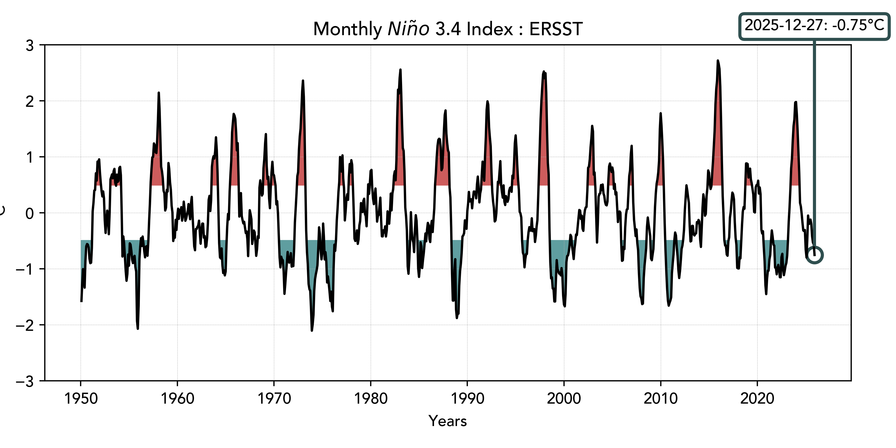

El Niño Southern Oscillation
Current ENSO conditions and historical trends

The Niño 3.4 index tracks sea surface temperature anomalies in the equatorial Pacific Ocean. Values above +0.5°C indicate El Niño conditions, while values below -0.5°C indicate La Niña conditions. This index is the primary metric used by NOAA to monitor and forecast ENSO events.
Sea Surface Temperature Hovmöller
Hovmöller diagrams show the evolution of sea surface temperature anomalies along the equator over time. These visualizations reveal the eastward and westward propagation of warm and cold water masses, helping to identify the development and decay of El Niño and La Niña events.